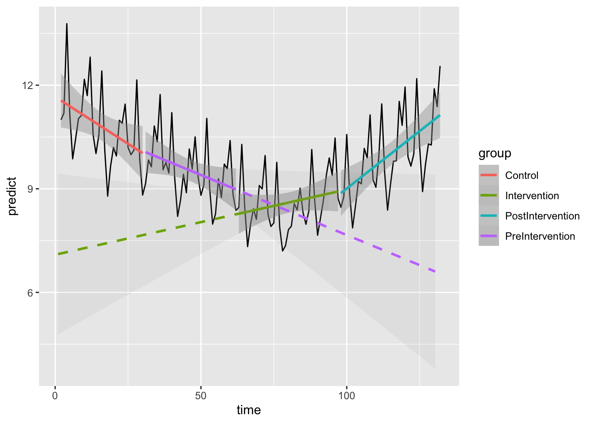

library(tidyverse)
library(knitr)11 New lm Predict Left & Predict Right
ggplot has some lovely built-in geoms that can show model extrapolations. Sometimes you might want to only show a line either before or after a certain point on an axis. This script shows how to achieve this manually.
11.1 Make new functions
First we create a pair of new functions which decorate an lm object to the right.
lm_right <- function(formula,data,...){
mod <- lm(formula,data)
class(mod) <- c('lm_right',class(mod))
mod
}and another that decorates an lm object to the left.
lm_left <- function(formula,data,...){
mod <- lm(formula,data)
class(mod) <- c('lm_left',class(mod))
mod
}Then create a new function which truncates the data of a model to the right of a defined point
predictdf.lm_right <-
function(model, xseq, se, level){
init_range = range(model$model$x)
xseq <- xseq[xseq >=init_range[1]]
ggplot2:::predictdf.default(model, xseq[-length(xseq)], se, level)
}and a counterpart which does the same, but to the left
predictdf.lm_left <-
function(model, xseq, se, level){
init_range = range(model$model$x)
xseq <- xseq[xseq <=init_range[2]]
ggplot2:::predictdf.default(model, xseq[-length(xseq)], se, level)
}Now we can apply the new functions to a dummy dataset to get a feel for what they do
11.2 Dummy Data Set
The dummy data set is a simulated time series where some kind of intervention took place at time point 85. The variable intv shows if the intervention has happened, whilst intv_trend counts the time elapsed since the intervention. Time is the study time from the first point. count is a measurable outcome.
int = 85
set.seed(42)
df <- data.frame(
count = as.integer(rpois(132, 9) + rnorm(132, 1, 1)),
time = 1:132,
at_risk = rep(
c(4305, 4251, 4478, 4535, 4758, 4843, 4893, 4673, 4522, 4454, 4351),
each = 12
)
) %>%
mutate(
month = rep(factor(month.name, levels = month.name),11),
intv = ifelse(time >= int, 1, 0),
intv_trend = c(rep(0, (int - 1)),1:(length(unique(time)) - (int - 1))),
lag_count = dplyr::lag(count)
)
head(df) count time at_risk month intv intv_trend lag_count
1 14 1 4305 January 0 0 NA
2 16 2 4305 February 0 0 14
3 8 3 4305 March 0 0 16
4 13 4 4305 April 0 0 8
5 9 5 4305 May 0 0 13
6 9 6 4305 June 0 0 911.3 Apply a model to the data
fit <- glm(
count ~ month + time + intv + intv_trend + log(lag_count) + offset(log(at_risk)),
family = "poisson",
data = df
)
summary(fit)
Call:
glm(formula = count ~ month + time + intv + intv_trend + log(lag_count) +
offset(log(at_risk)), family = "poisson", data = df)
Coefficients:
Estimate Std. Error z value Pr(>|z|)
(Intercept) -5.819498 0.215788 -26.969 < 2e-16 ***
monthFebruary -0.041578 0.144861 -0.287 0.774095
monthMarch -0.012683 0.144400 -0.088 0.930007
monthApril 0.177167 0.137702 1.287 0.198234
monthMay -0.008227 0.143182 -0.057 0.954180
monthJune -0.139175 0.148671 -0.936 0.349209
monthJuly -0.076264 0.147079 -0.519 0.604092
monthAugust -0.003828 0.144473 -0.026 0.978864
monthSeptember -0.013810 0.145474 -0.095 0.924368
monthOctober 0.101205 0.141138 0.717 0.473338
monthNovember 0.071865 0.141538 0.508 0.611634
monthDecember 0.166069 0.139051 1.194 0.232358
time -0.006706 0.001521 -4.409 1.04e-05 ***
intv 0.123208 0.123167 1.000 0.317149
intv_trend 0.013809 0.003776 3.657 0.000255 ***
log(lag_count) -0.036098 0.067583 -0.534 0.593249
---
Signif. codes: 0 '***' 0.001 '**' 0.01 '*' 0.05 '.' 0.1 ' ' 1
(Dispersion parameter for poisson family taken to be 1)
Null deviance: 175.48 on 130 degrees of freedom
Residual deviance: 141.17 on 115 degrees of freedom
(1 observation deleted due to missingness)
AIC: 703.88
Number of Fisher Scoring iterations: 411.4 Predict / Extrapolate data
Let’s split the data in to three ‘phases’ including “Pre-intervention”,“Intervention” and “Post-Intervention”. We’ll then predict the direction of travel on the model using predict
df$group = rep(c("Control","PreIntervention","Intervention","PostIntervention"), c(30,32, 35,35))
df$predict = c(NA, predict(fit, type="response"))
kable(df[50:70,])| count | time | at_risk | month | intv | intv_trend | lag_count | group | predict | |
|---|---|---|---|---|---|---|---|---|---|
| 50 | 10 | 50 | 4758 | February | 0 | 0 | 14 | PreIntervention | 8.810524 |
| 51 | 8 | 51 | 4758 | March | 0 | 0 | 10 | PreIntervention | 9.118286 |
| 52 | 11 | 52 | 4758 | April | 0 | 0 | 8 | PreIntervention | 11.039525 |
| 53 | 7 | 53 | 4758 | May | 0 | 0 | 11 | PreIntervention | 9.005955 |
| 54 | 12 | 54 | 4758 | June | 0 | 0 | 7 | PreIntervention | 7.976886 |
| 55 | 3 | 55 | 4758 | July | 0 | 0 | 12 | PreIntervention | 8.275475 |
| 56 | 10 | 56 | 4758 | August | 0 | 0 | 3 | PreIntervention | 9.291217 |
| 57 | 11 | 57 | 4758 | September | 0 | 0 | 10 | PreIntervention | 8.748828 |
| 58 | 6 | 58 | 4758 | October | 0 | 0 | 11 | PreIntervention | 9.716138 |
| 59 | 7 | 59 | 4758 | November | 0 | 0 | 6 | PreIntervention | 9.579476 |
| 60 | 9 | 60 | 4758 | December | 0 | 0 | 7 | PreIntervention | 10.397414 |
| 61 | 10 | 61 | 4843 | January | 0 | 0 | 9 | PreIntervention | 8.823483 |
| 62 | 14 | 62 | 4843 | February | 0 | 0 | 10 | PreIntervention | 8.375655 |
| 63 | 10 | 63 | 4843 | March | 0 | 0 | 14 | Intervention | 8.460194 |
| 64 | 10 | 64 | 4843 | April | 0 | 0 | 10 | Intervention | 10.284761 |
| 65 | 13 | 65 | 4843 | May | 0 | 0 | 10 | Intervention | 8.487231 |
| 66 | 6 | 66 | 4843 | June | 0 | 0 | 13 | Intervention | 7.326063 |
| 67 | 8 | 67 | 4843 | July | 0 | 0 | 6 | Intervention | 7.968960 |
| 68 | 14 | 68 | 4843 | August | 0 | 0 | 8 | Intervention | 8.422441 |
| 69 | 12 | 69 | 4843 | September | 0 | 0 | 14 | Intervention | 8.117401 |
| 70 | 6 | 70 | 4843 | October | 0 | 0 | 12 | Intervention | 9.096444 |
11.5 Plot models
A strength of this approach is that the new functions act like geoms in a ggplot.
Here, we plot the pre-intervention trend, its extrapolation to the right (using method “lm_right”). We also show the post-intervention trend, extrapolating it backwards to the left (using method “lm_left”).
ggplot(data = df, aes(x = time, y = predict)) +
geom_line() +
geom_smooth(data=filter(df,group=="Control"),method="lm", se=TRUE, aes(colour=group),fullrange=FALSE)+
geom_smooth(data=filter(df,group=="PreIntervention"),method="lm", se=TRUE, aes(colour=group),fullrange=FALSE)+
geom_smooth(data=filter(df,group=="Intervention"),method="lm", se=TRUE, aes(colour=group),fullrange=FALSE)+
geom_smooth(data=filter(df,group=="PostIntervention"),method="lm", se=TRUE, aes(colour=group),fullrange=FALSE)+
geom_smooth(data=filter(df,group=="Intervention"),method="lm_left", se=TRUE, aes(colour=group),fullrange=TRUE, linetype = "dashed",alpha=0.1)+
geom_smooth(data=filter(df,group=="PreIntervention"),method="lm_right", se=TRUE, aes(colour=group),fullrange=TRUE, linetype = "dashed",alpha=0.1)Warning: Removed 1 rows containing non-finite values (`stat_smooth()`).Warning: Removed 1 row containing missing values (`geom_line()`).
This is a neat trick, but in most circumstances you can probably make good use of an extrapolation from the truncated data as described in the section on Interrupted Time Series Analysis